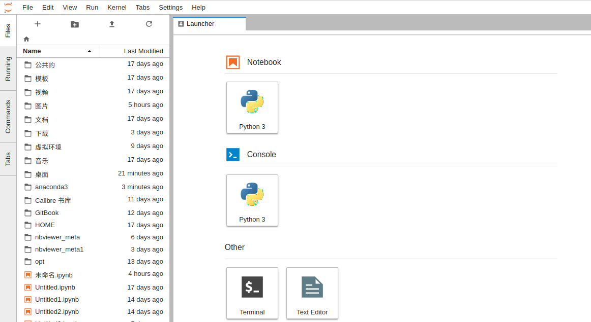
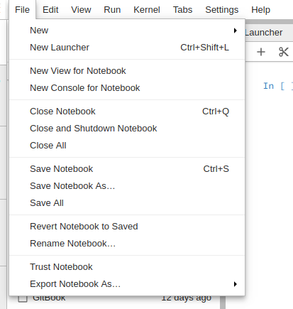
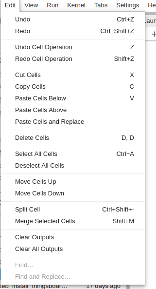
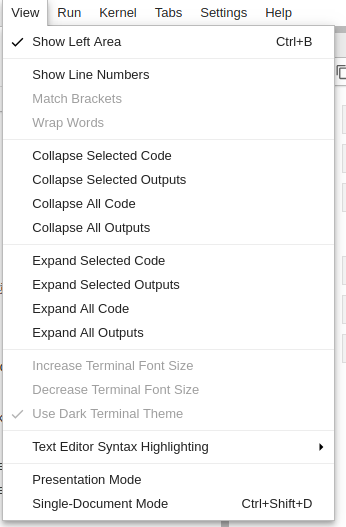
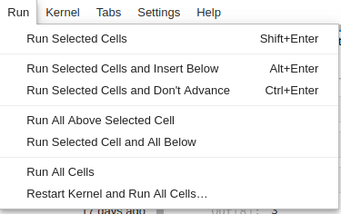
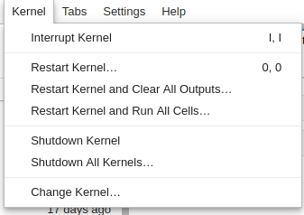
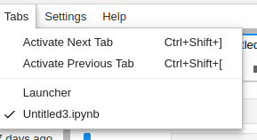
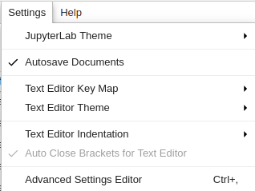
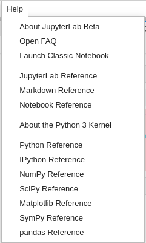
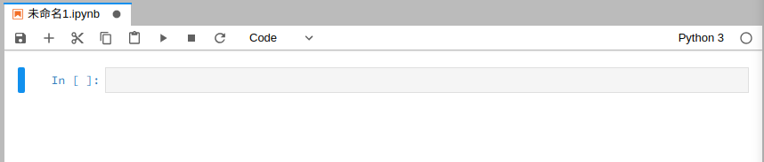

1.介绍
jupyterlab是jupyter notebook的进一步发展，支持更加灵活和更加强大的项目操作方式，具有和 Jupyter Notebooks 一样的组件。JupyterLab 环境与 Jupyter Notebooks 环境完全一样，但具有生产力更高的体验。jupyterlab的特点是将notebook、终端、文本文件和输出工作区放在一个窗口内，更加方便高效灵活。
2.页面
启动jupyter lab后，可见到以下界面：jupyterlab界面包含菜单栏、左侧边栏、主工作区等。
2.1菜单栏
- file(文件)：与文件和目录相关的操作，比如新建notebook、终端、文本文件，关闭和保存notebook等

- edit(编辑)：与编辑文档和其他活动相关的操作，包括对代码块的复制 粘贴 删除 移动等等。

- view(视图)：包括显示左侧区域、显示行号、折叠代码、文本编辑器高亮语法显示等。

- run(运行)：关于运行代码，包括运行当前代码、运行当前单元格并在之前(之后)插入单元格、运行所有等

- kernel(内核)：管理内核的操作，内核是运行代码的独立进程，包括中断核心、重新开始核心、重新开始并清空所有输出等

- tabs(选项卡)：激活下一个标签(打开的文件)，激活上一个标签(显示当前打开的文件)

- settings(设置)：常用设置，可以设置jupyterlab的主题，自动保存文件，文本编辑器键映射(默认，vim，sublime text等)，文本编辑器主题，文本编辑器缩进等。

- help(帮助)：能连接到markdown、notebook、python、numpy等的官方文档

2.2左侧边栏
files：主要对目录、文件的操作，打开目录、创建文件等。
running：查看当前在运行的核心以及控制台
commands：提供命令搜索功能。
tabs：显示当前打开的文件窗口以及切换功能。
2.3打开文件
要打文件可以点击左侧边栏的files，双击即可打开；
也可以在顶部菜单中的files选择新建
2.４工作区
打开notebook后，显示的工作页面如下：上方工具栏从左往右，依次为：保存、插入cell、剪切、复制、粘贴、运行选中的cell、中断内核、重启内核、选择编辑模式。
3.快捷键
Jupyter lab和jupyter notebook 提供了两种不同的键盘输入模式——命令和编辑。命令模式是将键盘和notebook层面的命令绑定起来，并且由带有蓝色左边距的灰色单元边框表示。编辑模式让可以输入文本（或代码），用绿色单元边框表示。分别使用 Esc 和 Enter 在两个模式之间切换。
进入命令模式之后
A 会在活跃单元之上插入一个新的单元，B 会在活跃单元之下插入一个新单元。
连续按两次 D，可以删除一个单元。
撤销被删除的单元，按Z
Y 会将当前活跃的单元变成一个代码单元。
按住 Shift +上或下箭头可选择多个单元。在多选模式时，按住 Shift + M 可合并你的选择。
按 F 会弹出「查找和替换」菜单。
处于编辑模式时（在命令模式时按 Enter 会进入编辑模式）
执行当前cell并跳到下一个cell：Shift Enter
Ctrl + Home 到达单元起始位置。
Ctrl + S 保存进度。
执行当前cell执行后不调到下一个cell：Ctrl Enter
Alt + Enter 不止会运行单元块，还会在下面添加一个新单元。
Ctrl + Shift + F 打开命令面板。
m：进入markdown模式，编写md的文档进行描述说明